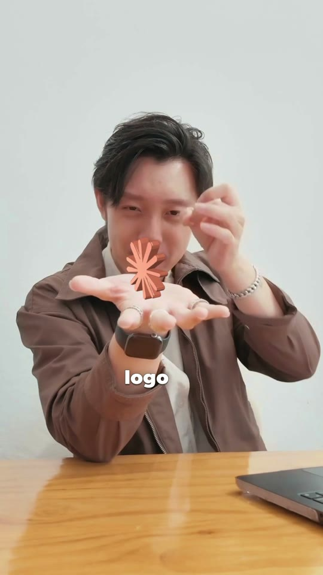
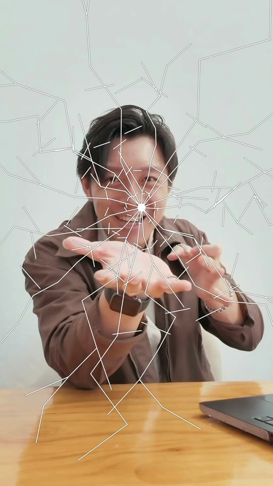
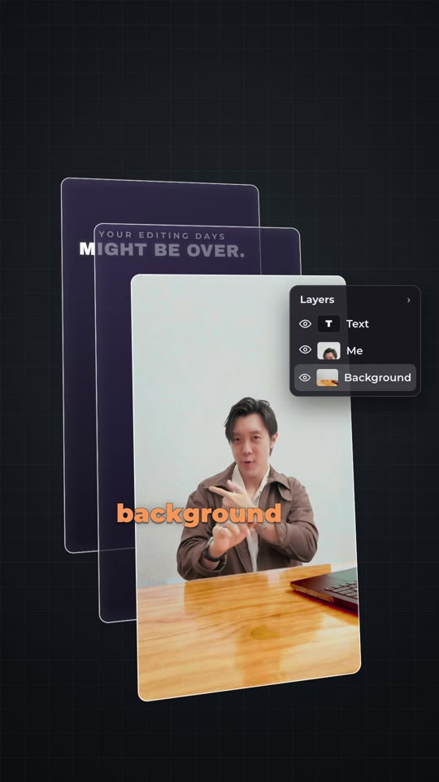
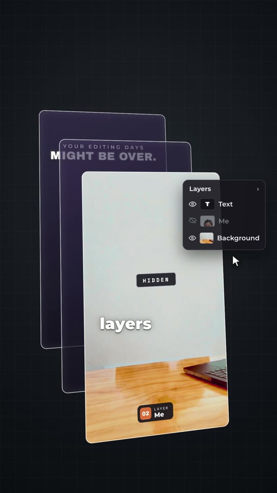
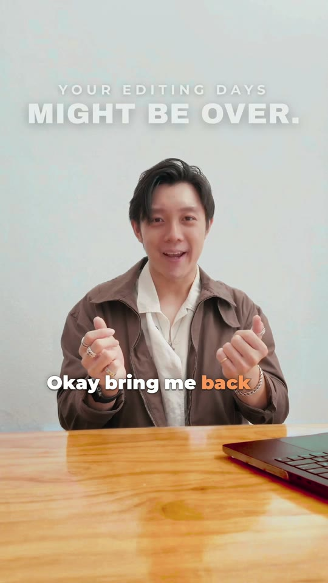
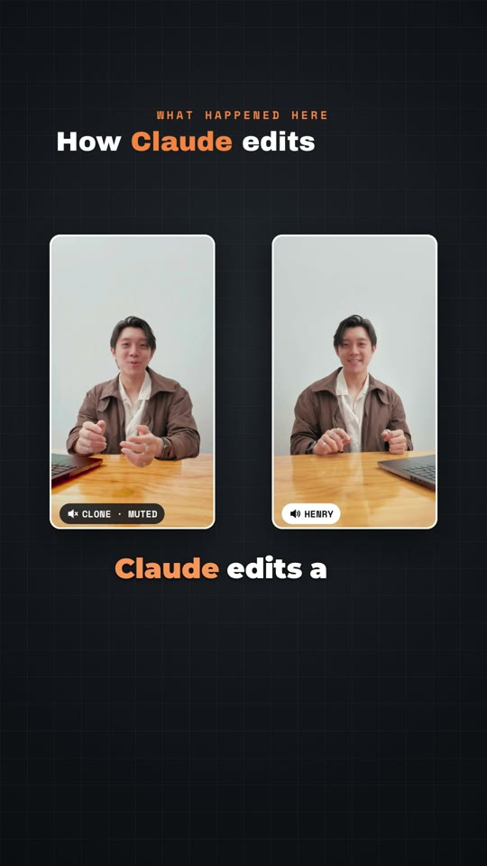
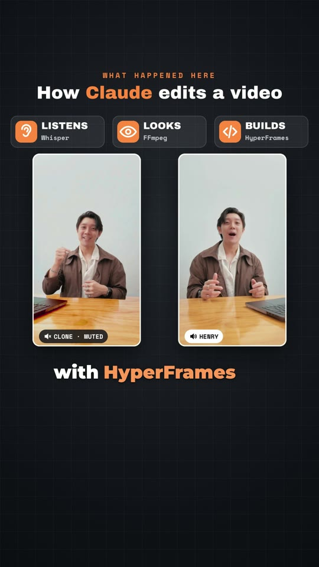
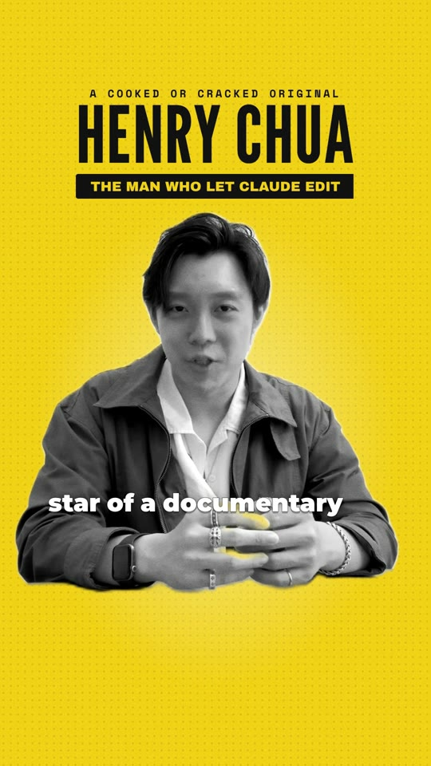
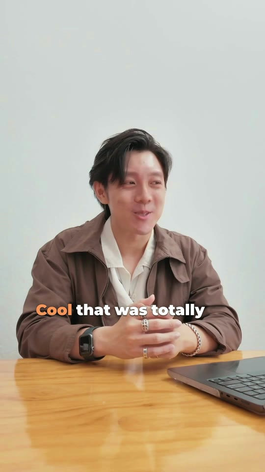
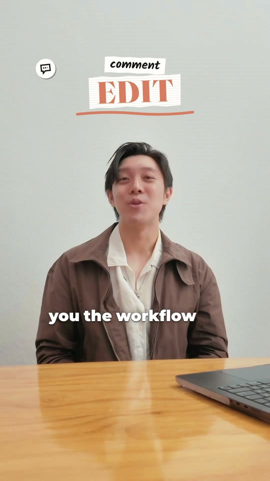

Film one take on your phone and ask for each effect out loud. Whisper writes down every word for Claude. FFmpeg cuts the pauses. HyperFrames builds each effect on the word you said it. All three are free. Tested on a real 2 min 50 s take: a 48 second video, first cut in 43 minutes, without opening an editing app.
what is inside
How it works, who it is forp2
Set up oncep3
Plan your lines: the blueprintp4
Film one takep6
Hand the take to Claudep7
Check and fixp8
Finish and postp9
Prompt pack, in orderp10
first cut43 min
video length48 s
tool costUS$0
By Henry Chua. The method comes from @pauloshimas's free guide. This is the tested version, timed on 29 September 2026 on a Mac with Claude Max. Nothing here is sponsored.
what you need
Claude Pro, US$20 a month, or higher A Mac on macOS 14 or newer, or a Windows PC A phone on a tripod About 2 hours for your first video, set-up included HyperFrames, Whisper, FFmpeg: free, Claude installs them
how it works
How Claude edits a video
Claude reads text and looks at pictures, but it cannot play a video. Three free tools fill the gap. Whisper writes down every word you say, with its time. FFmpeg pulls frames so Claude can see the shot, and it cuts the clip. HyperFrames lets Claude write the edit as a web page and turn it into an MP4. You film and give notes. Claude does the editing.
1Filmyou, one take
2ListenWhisper: every word with its time
3LookFFmpeg: one frame per second
4CutFFmpeg: pauses and retakes out
5BuildHyperFrames: each effect on its word
6CheckClaude renders and checks its frames
the editorClaude CodeThe Code tab in the Claude desktop app. Needs Claude Pro or higher. claude.com/pricing
the engineHyperFramesFree and open source, by HeyGen. Turns a web page into a video. HyperFrames on GitHub
the earsWhisperFree speech to text, with a time for every word. whisper.cpp on GitHub
the eyes and scissorsFFmpegFree. Pulls frames, cuts clips, fixes the sound. ffmpeg.org
Two ways to ask for an effect
Say it on cameraOne request per sentence while you film, then react. Viewers see you ask and see it happen. Pages 4 and 5 have 12 lines to copy.
Type it afterwardsTalk normally on camera. Then list the effects in the plan (prompt 4), each with the word it starts on. Best for explainers, tutorials and demos.
Who this is for, and who it is not for
use it if
You film yourself talking and want cuts, captions and effects without learning an editor. You are happy to type what you want, like notes to an editor. Talking-head Reels, explainers, tutorials and product demos fit best.
skip it if
Your video is fast and messy: quick hands and loose hair get soft cutout edges. You need an hour-long edit in one go; work in sections instead. You want new footage made from nothing. This edits what you filmed.
Cooked or Cracked · Let Claude edit your videospage 2
1
Set up once
about 15 minutes, one time
1
Download the Claude app from claude.com/download and sign in. Claude Code needs Pro, Max, Team or Enterprise. On the free plan, the Code tab asks you to upgrade.
2
Make a folder called my-edit in your Documents folder. Everything for this video goes in it.
3
Click Code at the top centre of the app. Choose Local, click Select folder and pick my-edit.
4
Next to the send button, set the mode to Manual. Claude now asks before it runs a command or changes a file.
5
Paste prompt 1 from page 10. Claude checks your computer and asks to install what is missing: Node.js, FFmpeg, Python, Whisper and the HyperFrames skills. Approve those.
6
When it is done, quit the Claude app and open it again, so it finds the new tools.
7
Paste: Run npx hyperframes doctor and tell me if anything I need is missing. You will see a list like this one.
npx hyperframes doctor (on the test Mac, trimmed)
✓ Version 0.8.91 (latest)
✓ Node.js v24.15.0 (darwin arm64)
✓ whisper-cpp /opt/homebrew/bin/whisper-cli
✗ TTS (Kokoro) Not installed (optional)
✗ BGM (MusicGen) Not installed (optional)✓ FFmpeg ffmpeg 9.0.2
✓ FFprobe ffprobe 9.0.2
✓ Chrome cache: …/chrome-headless-shell
✗ Docker running Not running◇ Some checks failed — see hints above
Read it like this: Node.js, FFmpeg, FFprobe and Chrome must show a tick. Crosses on TTS, BGM and Docker are fine. On Windows, a cross on whisper-cpp is fine too, because Claude uses faster-whisper there. Ignore "Some checks failed" if those four are ticked.
Mac, if Claude says Homebrew is missing. Press Control and ` (the key left of 1) to open the terminal inside the app. Paste the install line from brew.sh and press Return. Type your Mac password when asked; nothing shows while you type. When it ends, copy the lines under "Next steps", paste them and press Return. Then tell Claude "done".
Windows. Each installer asks "Do you want to allow this app to make changes to your device?" Click Yes. On a work laptop without admin rights, ask whoever manages it.
These are free, widely used tools, installed for the whole computer. To remove them later, ask Claude to uninstall them.
receipt On the test Mac the doctor check took 20 seconds.
Cooked or Cracked · Let Claude edit your videospage 3
the blueprint
Plan your lines: say this, get this
Pick your lines before you film. These are the 12 lines from the test take, in order, with a real frame of what Claude built for each. Start with 3 that need no extra files: 6, 9 and 10.
Tip: in prompt 4, paste the "you get" line of each effect you used. That tells Claude which look to build.

1
A 3D logo on your palm
say"Look into my palm. Here's the Claude logo."
you get a zoom onto your open hand and a 3D logo spinning on it.
needs: your logo file, palm still for a second

2
Throw it at the lens
say"I'm gonna flick it to you."
you get the logo flying at the camera, a glass crack, a flash and a shake.
needs: a flick of the hand towards the lens

3
Split into layers
say"Split me into three screens: the background, me, and then the text."
you get three glass panes and a Layers panel that lights up on each word.
needs: the 2 seconds of empty room

4
Hide yourself
say"Now hide my layers."
you get a cursor that clicks the eye icon. You vanish, and a HIDDEN tag appears.
needs: stand still for a second

5
Come back
say"Okay, bring me back."
you get a second click. You pop back in, then the shot zooms back to full screen.
needs: a small shrug sells it

6
You, framed, plus a clone
say"Put me on a frame on the right, and on the left show how Claude edits a video."
you get you talking in one frame, a silent clone of you in the other, and a title that builds.
needs: nothing extra; Claude uses a spare retake for the clone
Cooked or Cracked · Let Claude edit your videospage 4
the blueprint, continued

7
The steps, one by one
say"It listens with Whisper, it looks with FFmpeg, and it builds with HyperFrames."
you get one labelled chip per step, each on its word.
needs: a pause between the three parts
8
Your videos, in 3D
say"Now back to the full screen. Float my last three episodes."
you get your clips playing on 3D screens around you.
needs: 3 clips in the folder; look up at them

9
Documentary mode
say"Last one. Make me the star of a documentary."
you get a black and white cutout of you on yellow, with your name as the title.
needs: your name spelled right in prompt 3
10
More dramatic
say"Make it more dramatic."
you get black and red, letterbox bars, grain, a slow push in and a boom.
needs: a serious face

11
Back to normal
say"Now bring me back."
you get everything cleared: just you and the captions.
needs: nothing

12
Your call to action
say"Comment EDIT and I'll send you the workflow."
you get a comment stamp with your keyword, popping in with a sound.
needs: your keyword, said slowly
make it yours
Keep the pattern: one request per sentence, then react. If you can describe an effect in one sentence and tie it to a word, Claude can build it. For a video that is not about editing, type the effects into the plan instead (page 2).
Cooked or Cracked · Let Claude edit your videospage 5
2
Film one take Claude can edit
about 10 minutes
Set up the shot
Phone on a tripod, vertical 9:16 for Reels. The shot never moves, so effects stay locked to you.
Light on your face, about 1 metre from the wall. A clean edge gives a clean cutout.
Quiet room. The phone's own mic works if you sit close; a clip-on mic sounds better.
Turn HDR video off. iPhone: Settings, Camera, Record Video, then HDR Video off (called HDR on some models). Android: turn off HDR10+ video (Samsung) or 10-bit HDR (Pixel). HDR came out yellow in the test (page 8).
While you talk
One effect per sentence, from your plan.
Pause a second after each request. The effect needs the room; Claude trims the rest.
Hold still where it lands: an open palm for the logo, standing still for "hide".
Look where the effect will appear and react to it.
Say your call to action slowly. It is the line that matters most.
Before you stop recording: step out and film 2 seconds of the empty room. Claude shows it when you hide or split into layers. The test take had none, so Claude painted one with Google's Gemini image model, for under US$1. Filming it is free and looks better.
Frame it like this: head in the upper third, chest and hands in shot, table edge low in the frame. Keep the same framing for the whole take.
shot never moves1 m to the wallyour takethe empty room
Put these in the my-edit folder
takeyour video, named take (keep .MOV or .mp4)
logoSVG or PNG, only for effect 1
3 clipsonly for effect 8
soundsoptional, music or effects you own
Move the video to your computeriPhone to Mac: AirDrop it. It lands in Downloads. Drag it into my-edit and rename it take. Android or Windows: plug the phone in with a USB cable, open the phone's DCIM, then Camera folder, and copy the video into my-edit. Or upload it to Google Drive and download the original. Windows: in File Explorer, click View, Show, File name extensions, so the name does not become take.mp4.mp4.
optional, before the real takeprompt 2
test.mp4 is a 5 second test of my set-up. Pull 3 frames and tell me if my face is well lit, if I am far enough from the wall for a clean cutout, and if anything important is near the edges. Tell me exactly what to fix.
receipt The test take ran 2 min 50 s, filmed once on an iPhone with retakes left in. Claude kept the best take of each line.
Cooked or Cracked · Let Claude edit your videospage 6
3
Hand the take to Claude
about 45 minutes, plus notes
Open a new Code session on my-edit; a fresh session goes further on Pro. Paste prompts 3 to 7 from page 10, one at a time, and wait for each to finish. Optional, for a cleaner voice: ask Claude to save your audio as a WAV, run it through Adobe Podcast Enhance (free: audio only, up to 30 minutes a file, 1 hour a day), put the result in my-edit and ask Claude to use it.
a
Ears and eyes. Prompt 3, with your names in it. Claude writes down every word with its time, then looks at a frame every second. Whisper first wrote "Claude" as "cloud". The names in the prompt fix that.
take.words.json, what Claude reads
start end word
0.30 0.56 Look 0.48 0.87 into 0.79 1.03 my 0.95 1.23 palm.
1.63 1.94 here's 1.87 2.16 the 2.08 2.58 Claude 2.50 2.68 logo.
b
Plan first. Prompt 4, with the "you get" lines of your effects, or the effects you want if you did not say them on camera. Claude writes a beat sheet: time, your words, what appears, where, and the sound. Say OK when it reads right.
c
Cut. Prompt 5. The pauses and retakes go. The test take went from 2 min 50 s to 48 seconds in 26 pieces, in about a minute.
d
Build and watch. Prompts 6 and 7. Claude builds every effect, adds captions, checks its own frames and opens the edit in HyperFrames Studio in your browser. Press play. Type your notes to Claude in the Code tab.
localhost · HyperFrames Studio (npx hyperframes preview)
your edit, playing at 0:10the layers and keyframes Claude wroteignore this box: notes go to Claude
e
Give notes like a director. One change per message, always with the time. Say what you want to see, not how to code it. Real notes from the test:
0:04 The logo covers my mouth. Make it smaller and lower.
0:14 Two captions overlap. Show one at a time.
0:13 When I say hide, click the eye and make me vanish, no fade.
receipt First cut in 43 minutes, with three rounds of self-found fixes. A round of notes: 33 minutes.
Cooked or Cracked · Let Claude edit your videospage 7
4
Check and fix
about 10 minutes
Watch the preview with the sound on. The prompts on page 10 already guard against these. If one still slips through, paste the fix as it is.
Skin looks yellow and flat
In the test, turning the iPhone HDR footage into normal video left skin yellow and wood mustard. Best fix: film with HDR off (page 6). Already filmed? Paste:My footage is HDR (iPhone HLG or Android HDR10+). Convert it properly from BT.2020 to BT.709 before any grade, so my skin does not turn yellow. Then add light skin smoothing. Show me a before and after frame.
beforeafter
A word is cut off at a join
Whisper's word times can be a little early or late, so a cut clips the first or last sound. The test had five, like "Look" and "Nice". Paste:Listen around every cut and widen any cut that clips the start or end of a word. Keep 60 ms of room. List each cut you changed.
Your voice drifts from your lips
The sound was cut separately from the picture. In the test it slid up to 65 ms by the end. Paste:Cut the audio in the same step as the video, then check the sync at five points and tell me the offset.
Text sits under the Instagram buttons, or on your face
The app covers the top, the bottom and the right edge. These margins kept text clear in the test. Meta's own guidance for ads is stricter: about 270 px top, 670 px bottom and 65 px each side. Paste:Keep all text out of the top 220 px, the bottom 450 px and the right 150 px, and never cover my face. Snapshot the frames and check.
Claude says it is done, but it looks wrong
It has not looked at that frame. Paste, with your time:Snapshot the frame at 0:07 and check it yourself before you tell me it is fixed.
Claude stops halfway: usage limit
Video work uses a lot of Claude's allowance, and the test ran on Claude Max. On Pro, start the edit in a fresh session. If you hit the limit, wait for the reset, then paste:Continue from where you stopped. Read the beat sheet and the files in this folder first.
receipt Each fix took one prompt and one render of about a minute.
Cooked or Cracked · Let Claude edit your videospage 8
5
Finish and post
about 10 minutes
Claude's last check: the whole 48 second edit, a frame every half second. It looks for a covered face, a clipped caption or a late effect.
Paste prompt 8. Claude levels the sound to -14 LUFS, the level most creators master Reels to (Instagram does not publish a target). It listens around every cut, saves final.mp4 in my-edit and checks its own frames one last time.
final.mp4, the test's numbers
loudness -14.0 LUFS
peak -1.8 dBFS
size 1080 x 1920, 30 fps, 48 s
1
Send final.mp4 to your phone. Mac to iPhone: AirDrop. Windows or Android: Google Drive or a USB cable.
2
Watch it once with the sound on. Read every caption.
3
Post it. Pick a cover frame and put your keyword in the caption.
4
Asking people to comment a keyword? Set up the automatic DM reply (ManyChat, or Instagram's own automations) before you post.
5
Music: use only tracks you have the rights to. Claude can make simple sound effects with code.
raw take to video
2:50 → 48 s
26 pieces, one take
first cut
43 min
with three rounds of self-found fixes
each render
~1 min
48 s of 1080 by 1920 video
tool cost
US$0
plus under US$1 for the AI empty room
The Cooked or Cracked version of this reel adds an opener, stamps and a scoreboard in ChatCut, a separate editor. This guide covers the Claude edit.
about the numbers in this guide
Prices, tool versions and plan details were checked on 29 September 2026 on claude.com/pricing and the HyperFrames GitHub page. Anthropic and HeyGen change pricing, features and terms at their own discretion, sometimes weekly. Treat every figure here as a snapshot on that date, not a quote, and confirm on the linked page before you pay. I am not affiliated with either company and I do not earn from these links.
If something here has changed by the time you read it, tell me in the comments and I will update the file. Henry Chua.
Cooked or Cracked · Let Claude edit your videospage 9
copy, paste, in order
The prompt pack
Open this PDF on the computer you edit on, so you can copy the prompts. Paste them into the Code tab one at a time and wait for each to finish. Swap the [brackets] for yours.
1 · Set uponce, in the my-edit folder
Set up this computer to edit videos with HyperFrames. Check for Node.js 22 or newer, FFmpeg, Python 3 and Whisper (whisper.cpp from Homebrew on a Mac, faster-whisper on Windows). Install anything missing and ask me before each install. Then run npx hyperframes skills update and npx hyperframes doctor. Tell me what is installed, with versions, and anything I still need to do.
2 · Check your shotoptional, test.mp4 in the folder
test.mp4 is a 5 second test of my set-up. Pull 3 frames and tell me if my face is well lit, if I am far enough from the wall for a clean cutout, and if anything important is near the edges. Tell me exactly what to fix.
3 · Ears and eyesyour take in the folder
My video is the take file in this folder (take.mov or take.mp4). Transcribe it with Whisper, with the start and end time of every word, and save it as take.words.json. Then pull one frame per second with FFmpeg and look at them. Tell me what I say, when, and what is in the shot. Spell these names right: [your name], [your brand], [any product names].
4 · Plan firstread it, then say OK
Before you build anything, write a beat sheet: start and end time, my exact words, what appears on screen, where it sits, and the sound. Build these effects: [paste the "you get" lines, or list each effect with the word it starts on]. Vertical 9:16 for Reels. Keep text out of the top 220 px, the bottom 450 px and the right 150 px, and never cover my face. Wait for my OK.
5 · Cutpauses and retakes out
Cut the pauses and retakes with FFmpeg. Keep full sentences and the best take of each line. Never cut inside a word: leave 0.3 s after each sentence and 60 ms of room at every cut. Cut the audio in the same step as the video. Tell me the new length.
6 · Buildevery effect on its word
Build the edit in HyperFrames from the beat sheet. Start every effect on its word. Use npx hyperframes remove-background for a cutout of me, and the empty room at the end of my take as the background. Add a sound effect to each animation, quieter than my voice: use the sounds in this folder, or make simple ones with code. Snapshot your own frames and fix what looks wrong, then open the preview.
7 · Captionsafter the build
Add captions from the transcript: 2 to 3 words at a time, bold white with a dark outline, the key word of each sentence in orange, at about 65% of the screen height. One caption on screen at a time.
8 · Finishsound, render, last check
Level the sound to -14 LUFS with peaks under -1 dB. Listen around every cut and fix any clipped word. Render a 1080 by 1920 MP4 and save it as final.mp4 in this folder. Then pull a frame every half second from final.mp4 and check the sync, the captions and that nothing covers my face. Tell me what you fixed.
Fixes for yellow skin, clipped words, drifting sound, hidden text and the usage limit are on page 8.
Cooked or Cracked · Let Claude edit your videospage 10